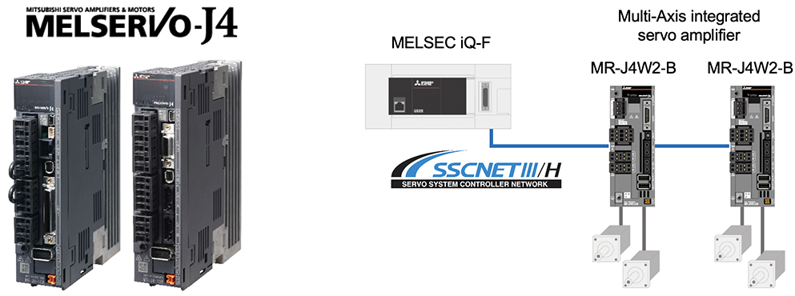
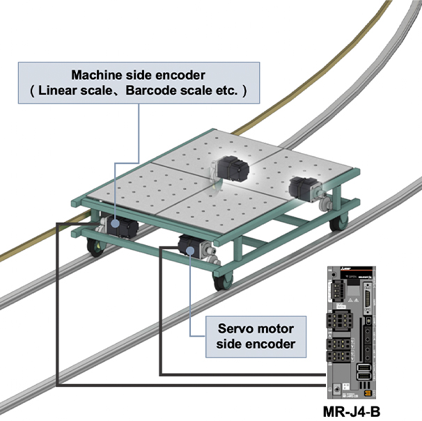
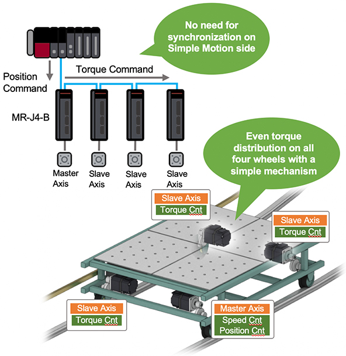
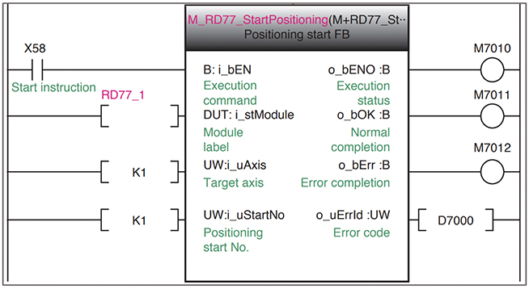
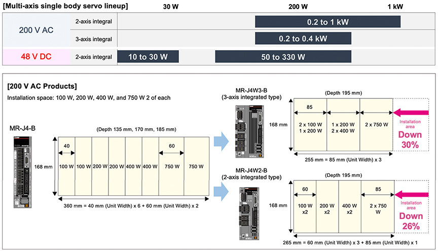

Solusi
Logistik

RGV/AGV
Pemantauan operasi dan pemeliharaan prediktif
- Pengumpulan data real-time oleh perangkat FA yang terhubung jaringan
- Pemrosesan dan analisis data di lapangan dengan menggunakan produk edge computing
- Kerja sama dengan mitra aliansi e-F@ctory
Solusi untuk Masalah
| Masalah | Solusi |
|---|---|
| Pencegahan efek slip selama operasi dan pemberhentian kecepatan tinggi | Respons tinggi dan presisi tinggi dengan menggabungkan implementasi pemosisian multi-encoder |
| Kontrol penggerak multi-roda | Operasi simultan multi-sumbu dengan perintah posisi sederhana untuk satu sumbu |
| Start-up cepat | Penyederhanaan program dengan menggunakan function blocks |
| Miniaturisasi RGV/AGV | Penghematan ruang dengan memanfaatkan amplifier multi-sumbu |
Konfigurasi Sistem

Fitur
Pencegahan efek slip selama operasi dan pemberhentian kecepatan tinggiKontrol Fully Closed
Respons tinggi dan presisi tinggi dengan menggabungkan encoder sisi motor dan sisi beban untuk pemosisian
Dalam operasi: sisi servo motor, Dalam pemberhentian: Kontrol posisi dengan beralih ke encoder sisi mesin. Pengaturan gain tinggi menjadi mungkin. Waktu settling dipersingkat dan pengaruh slip pada bagian penggerak dihilangkan, memungkinkan kontrol pemosisian presisi tinggi.

Cara Mengkonfigurasi Kontrol Fully Closed
Dengan menggunakan Engineering tool MELSOFT GX Works3 pengaturan electronic gear kontrol fully closed untuk parameter servo sumbu 1.
[MELSOFT GX Works3 Fully Closed Control Setting Screen]
Kontrol penggerak multi-rodaOperasi Master/Slave
Operasi pembagian torsi multi-sumbu dengan perintah posisi untuk satu sumbu
Karena MR-J4-B dapat mentransmisikan data torsi yang sama dari sumbu master ke sumbu slave melalui komunikasi driver, operasi pembagian torsi multi-sumbu menjadi mungkin

Pengaturan operasi master/slave
Atur parameter servo yang sesuai dengan sumbu master dan slave dengan engineering tool MELSOFT GX Works3.
[MELSOFT GX Works3 master/slave operation setting screen]
Start-up cepatFunctfion Blocks
Penyederhanaan program dengan menggunakan function blocks (FB)
Dengan unit FB dari MELSOFT GX Works3, kontrol gerak seperti kontrol pemosisian dan kontrol sinkronisasi lanjutan dapat diprogram dengan mudah.

Pemrograman dengan Function Blocks
Dengan engineering tool MELSOFT GX Works3, Anda dapat membuat program cukup dengan drag and drop FB yang diperlukan dari unit FB atau FB terdaftar yang disediakan di situs FA ke layar editor.
[MELSOFT GX Works3 Program Creation Screen]
Miniaturisasi RGV/AGVAmplifier servo terintegrasi Multi-Sumbu
Penghematan ruang yang terealisasi dengan memanfaatkan amplifier multi-sumbu (MR-J4W)
Penghematan ruang sambil mempertahankan performa amplifier servo
